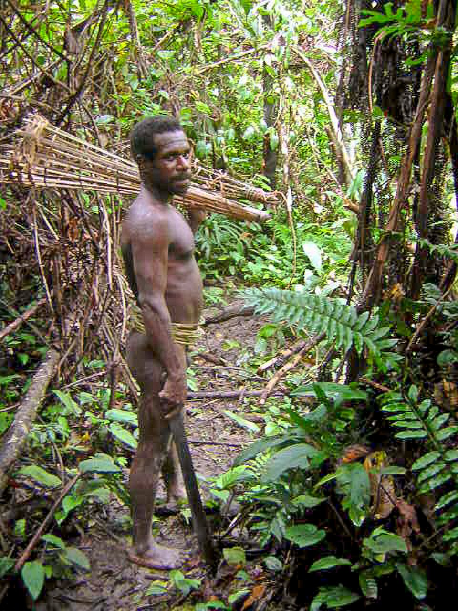
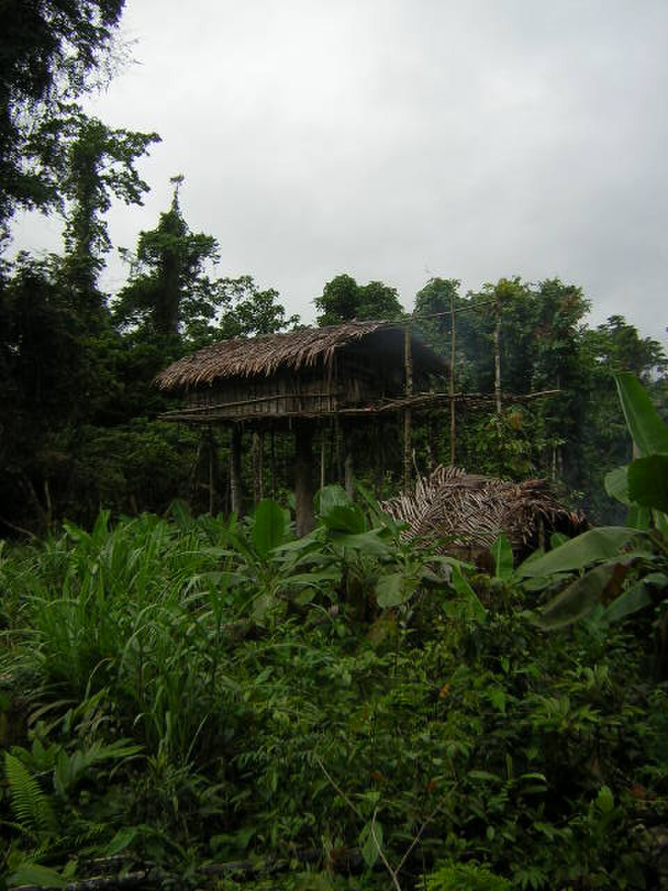
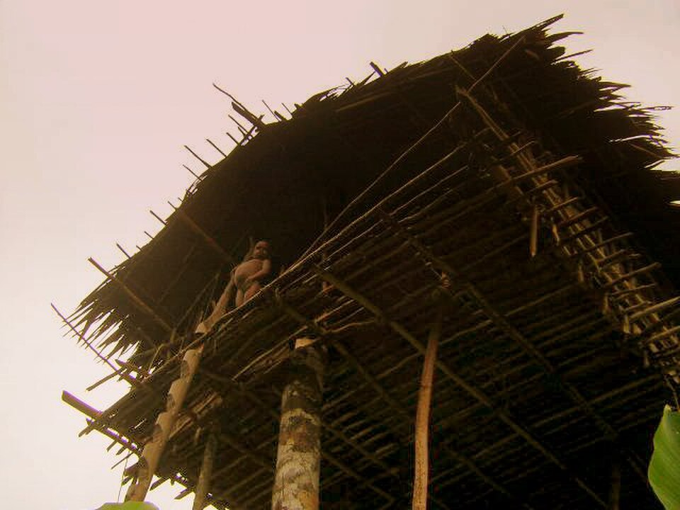
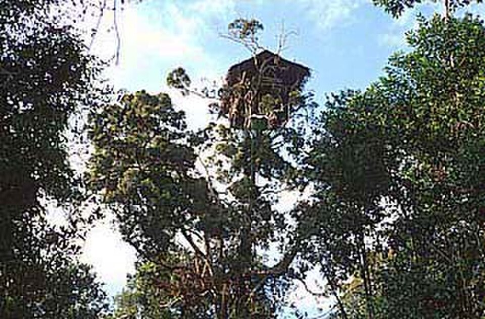
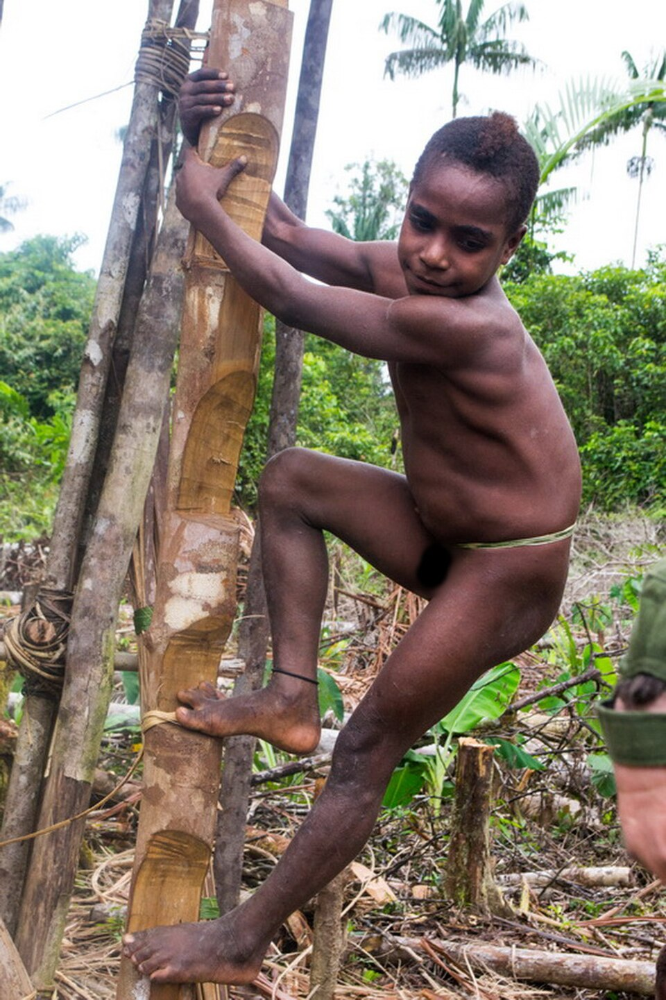

In the impenetrable jungles of the Indonesian part of Papua lives a tribe that decided the ground was not the safest place for a home. The Korowai have become world-famous for their unique architecture: they build their dwellings on the summits of giant banyan trees, sometimes at a height of 35–45 meters. These are not just huts, but entire ancestral estates hanging above the canopy of the tropical forest. For the Korowai, height is the only way to survive in a world where malarial mosquitoes, floods, and, according to their beliefs, evil spirits called Laleo lurk below, roaming the jungle in search of victims.
How do you build a house at the height of a 10-story building using only a stone axe and vines? The Korowai choose a sturdy tree, cut off the top, and use the trunk as the main support. The floor and frame are made from palm trunks, while the roof is crafted from bark and leaves. Every detail is bound together with rattan fibers. Building a house is a collective feat, resembling a miniature construction of the pyramids. The most amazing part is not how they sleep there, but how they lift the materials. Heavy planks from split sago palm trunks are hauled up by hand using a system of homemade pulleys made of vines and incredible physical strength. Up to 12 people and even domestic animals (dogs and small piglets) can live in such a house, carefully carried up the narrow ladder by the owners. A house lasts about five years before the wood begins to rot from the humidity, at which point the tribe builds a new "skyscraper" nearby.


The primary food source for the Korowai is the sago palm. A single felled tree can feed an entire family for a week. However, their ultimate delicacy and "energy bar" are the larvae of the capricorn beetle. The Korowai specifically notch fallen palm trunks so that the beetles lay their eggs there, harvesting a fatty, protein-rich "crop" a month later. They are eaten either raw or roasted over a fire until crispy—they are said to taste like fried bacon with nuts.
Until the late 1970s, the Korowai had no idea that other people existed on the planet. They have no calendars and no concept of an "hour" or a "year." Time for them is measured by the flowering cycles of trees and the ripening of sago. The Korowai have no written language, and their counting is limited to simple concepts. Despite this, their social structure is very rigid: everything is shared equally, and in the past, violating tribal laws led to severe punishment, which gave rise to many rumors of cannibalism.
The world of the Korowai is saturated with magic. They believe that all misfortunes—illness, crop failure, or death—are caused not by viruses, but by the schemes of evil sorcerers called Khakhua. A Khakhua is a person from the tribe possessed by a demon. According to their laws, the sorcerer must be destroyed to save the others. This ancient custom was the root of the cannibalism rumors. For the Korowai, this was not merely "eating meat" but an act of supreme justice: they believed that by consuming the sorcerer, they were permanently destroying the demon within. Modern Korowai, familiar with missionaries, speak of this reluctantly, claiming the practice remains in the distant past.


The Korowai possess a unique foot structure and an incredible sense of balance. From early childhood, they learn to move along slippery vines and poles. Their big toes are often significantly offset to the side—this allows them to literally "clasp" branches and ladders, much like primates. The women of the tribe are capable of climbing to a height of 30 meters while carrying sago baskets weighing 20–30 kg on their heads. They have almost no fear of heights; for a Korowai child, sitting on the edge of a bottomless abyss is as natural as for a city child to sit on a sofa.
There is no concept of private land ownership, but every tree in the forest has an owner. Felling someone else's sago palm is a grave crime. Their tools are strikingly simple: a stone chisel, a bone knife, and bamboo tongs for embers. At the same time, they possess profound knowledge of botany. The Korowai distinguish hundreds of species of herbs and trees, knowing which provide the strongest rope and which can stun fish in a river if thrown into the water. This is not "backwardness," but perfect adaptation to an environment where a modern human would not survive a single day.
Life in a treehouse is strictly regulated. Inside the hut, there is a clear division into male and female halves. There are even two separate hearths so that smoke and odors do not interfere with different parts of the family. Despite the cramped conditions, family conflicts are rare—the Korowai know that their lives depend on the coordination of their actions. Within the home, strict discipline prevails; men never enter the female wing without extreme necessity, and vice versa. Even the entrances to the house are often separate. This is not just a matter of convenience—the Korowai believe that mixing male and female energy in everyday life can weaken hunting luck or anger ancestral spirits. When a child is born, they remain in the female half until a certain age, after which boys begin to be taught harsh male crafts: archery and construction.
If a conflict with a neighboring clan begins down in the jungle, the house turns into an impregnable fortress: it is enough to pull up the ladder-pole, and the enemy cannot reach the family while remaining under fire from arrows from above. The Korowai are not only builders but also fearless hunters. One of their most dangerous activities is hunting freshwater crocodiles in the murky tributaries of rivers. They do not use traps: a hunter jumps into the water, grabs the reptile by the jaws, and pins them while partners finish the animal with bone knives. Another target is the cassowary, a huge flightless bird with claws capable of disemboweling a human. Cassowaries are hunted using ambushes: the Korowai build small huts on the ground that mimic bushes and wait for hours for the bird to come within striking distance. Cassowary bones are a priceless material; the strongest knives and arrowheads are made from them.

The weaponry of the Korowai is the pinnacle of forest engineering. Their bows are made of split bamboo or palm wood, which possesses incredible elasticity. The bowstring is a strip of fibrous bark soaked in plant sap for flexibility. But the main pride lies in the arrows, which are never made to be universal: For large game, an arrow with a detachable tip that "wanders" in the body; For birds, an arrow with a blunt bone knob that stuns without damaging feathers; For fishing, long arrows with 4–5 thin needles.
The Korowai are masters of "passive" hunting. The forest around their homes is dotted with ingenious traps. One of the most effective is the "falling log." This is a system of levers and vines that holds a heavy tree trunk over a trail. If a pig trips a thin tripwire, the lock is released, and the log instantly falls. They also build massive maze-like pens for fish, using the natural current of the rivers: fish swim in during high tide, and when the water recedes, they remain in a bamboo net.
In a Korowai home, there is always a place of honor for the skulls of hunted animals. This is not just a decoration, but a man's "certificate of maturity." The more boar and crocodile skulls hang under the ceiling, the higher the status of the head of the family. Neighbors determine how successfully a clan controls its territory by these trophies. For the Korowai, a successful hunt is a sign of the favor of ancestral spirits: if they are pleased, they "send" the beast to the hunter.
Once every few years, the Korowai organize a grand "Sago Festival." This is the only time several clans gather together. The main goal is to harvest capricorn beetle larvae. But this is not just a meal; it is a sacred act. They believe that eating these larvae not only gives strength to the body but also "charges" the land with fertility for years to come. During these days, the jungle is filled with singing that sounds more like a rhythmic roar. Dancing can last all night long, and it is the only moment when the Korowai feel like part of a large nation rather than an isolated family in a celestial fortress.
For the Korowai, death is not the end, but a return to the "world of shadows" located somewhere beyond the horizon of the great river. The most terrifying thing for them is death from illness, as it is considered the work of a Khakhua sorcerer. If a person dies of old age or during a hunt, it is accepted calmly. Funeral rites depend on status: sometimes the body is left on a special platform in the forest so the spirit can fly into the sky more easily. They believe that after death, the human soul must cross a bridge made of a single vine over a fiery abyss. Only one who was a good hunter and honored the laws of the ancestors can maintain their balance.
The Korowai have no concept of "fashion." Men often wear no clothing at all, except for ornaments made of boar teeth or bone. Women weave skirts from sago palm fibers. Instead of soap and shampoos, they use the sap of certain plants and river water. Their main "cosmetics," however, are ochre and ash. Body markings are not just decor; they are a passport. By the patterns on the chest or face, another Korowai will immediately understand which clan a person belongs to and how many boars they have taken. Despite the lack of hygiene in our sense, the Korowai possess a powerful immunity to forest fungi and infections that would kill a city dweller in a week.
In recent years, the world of the Korowai has begun to crumble. The appearance of tourists with cameras and missionaries with Bibles is forcing tribes to descend to the ground. The Indonesian government builds "model" villages for them with wooden houses on stilts. The Korowai agree to move because there is salt, sugar, and iron knives available there. But many, upon receiving a knife, still return deep into the jungle to build their true home atop a tree. They say: "On the ground we sleep too lightly, but in the sky, we sleep like gods." This is a struggle for the right to remain in the Stone Age while planes fly overhead.